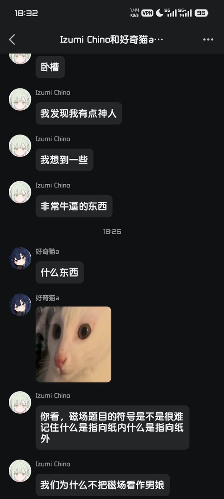
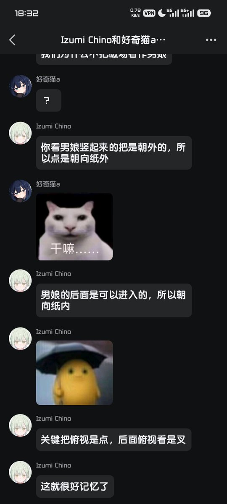

好奇猫a
@acnekot
接下来我会用，最直白，最直接，最不绕弯子、最真相、最不绕弯、最扎心、最硬核、最干脆、最不墨迹、最戳痛点、最不留情面、最一针见血、最开门见山、最单刀直入、最不铺垫、最不客套、最不煽情、最不废话、最不拐弯、最不磨叽、最不装、最不端着、最不啰嗦、最不拖沓、最不委婉、最不掩饰、最不藏着掖着、最直白、最露骨、最实在、最通透、最毒辣、最爽快、最解气、最上头、最够劲、最过瘾、最粗暴、最有效、最狠、最准、最稳、最顶、最炸、最刚、最烈、最飒、最莽、最冲、最猛、最脆、最亮、最透、最干、最净、最硬核、最透彻、最赤裸、最凛冽、最尖锐的话告诉你，我受不了了

